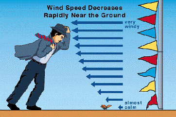

Shear
This section
explores one of the main ingredients that determine whether a thunderstorm
will remain a non-severe system, providing mainly garden variety showers
and thunderstorms or be transformed into a severe thunderstorm with
the potential of producing heavy rainfall, large hail, gusty winds, and
even tornadoes. Shear is the variation of the wind speed perpendicular
to the direction of the flow. This is portrayed in the picture
below. Winds near the ground are almost calm but the wind speed increases
with height (wind shear). Large values of wind shear throughout the
atmosphere provide one of the conditions for development severe thunderstorms.

 Consequences
of Shear
Consequences
of Shear